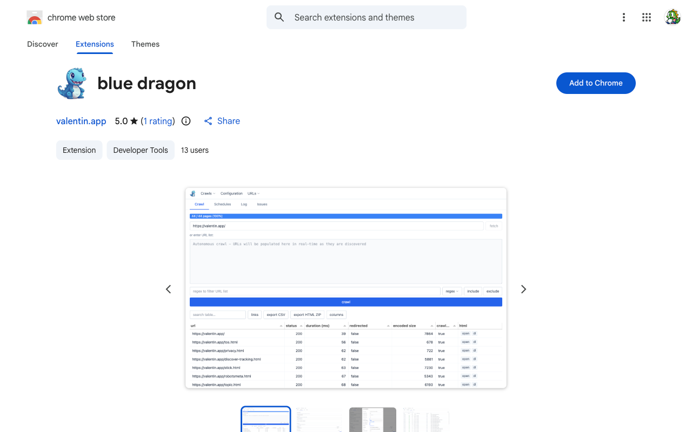
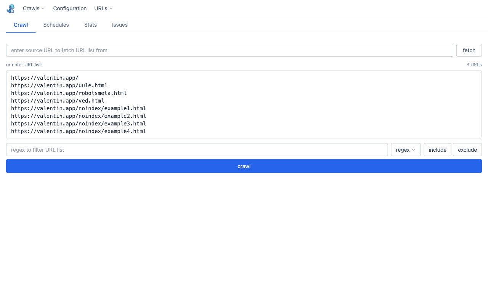
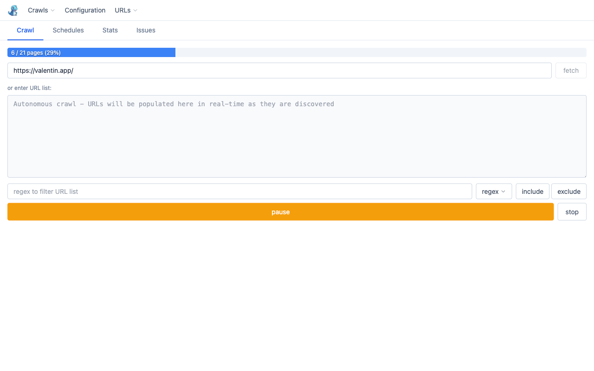
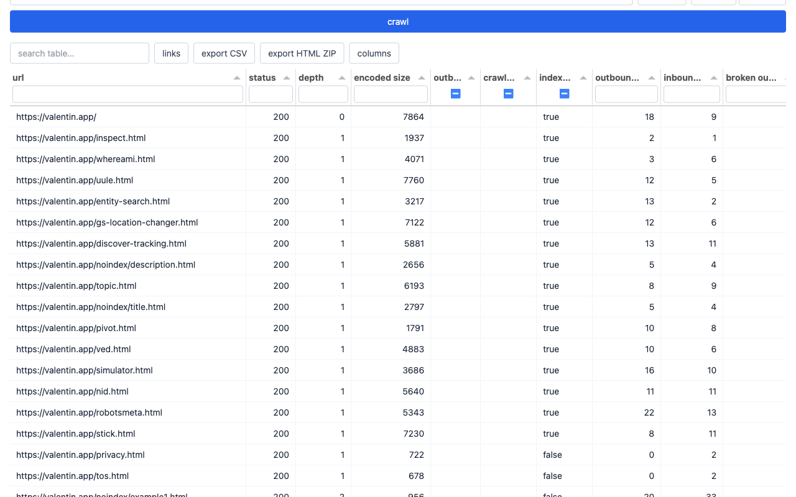
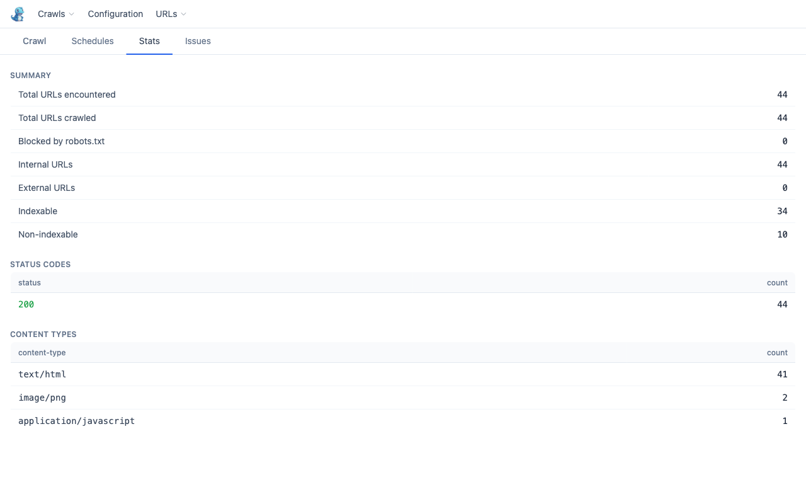
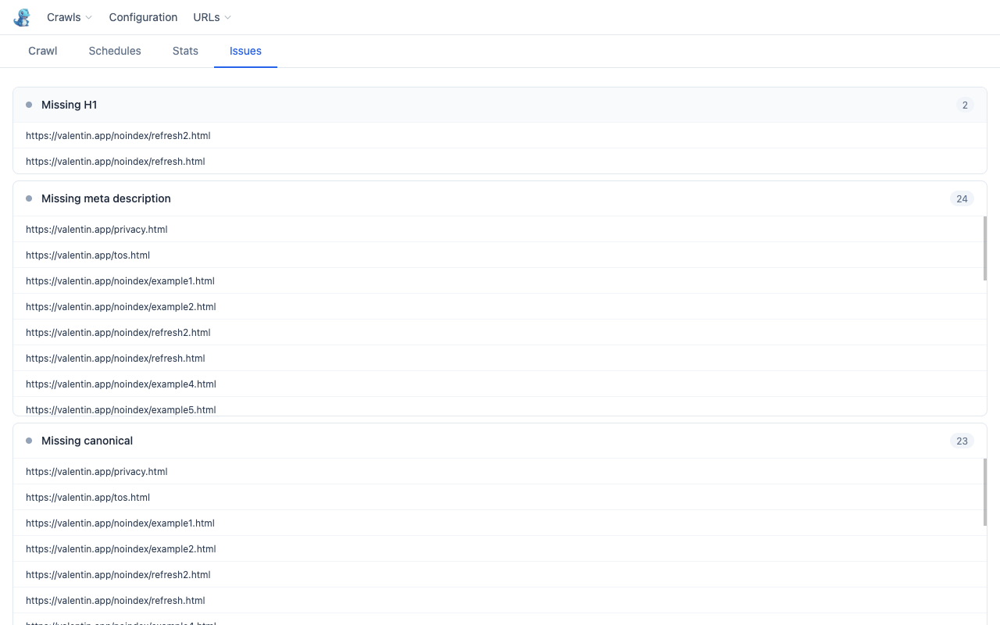

Installation
Add to Chrome
Visit the Chrome Web Store listing and click Add to Chrome, then confirm by clicking Add extension in the dialog that appears.

Open blue dragon
Click the dragon icon  in the Chrome toolbar. If you don't see it, click the puzzle-piece extensions menu and pin blue dragon. The extension opens as a full tab.
in the Chrome toolbar. If you don't see it, click the puzzle-piece extensions menu and pin blue dragon. The extension opens as a full tab.
Quick start: crawl a site
Build your URL list
Enter a start URL in the Spider URL field and click fetch. Blue dragon fetches the page and extracts all linked URLs into the list below. Alternatively, paste URLs directly (one per line) or import from CSV / sitemap via the URLs menu.

Start the crawl
Click crawl. Pages are fetched concurrently (default: 5 connections). A progress bar tracks completion. The crawl runs in the background service worker — you can close this tab and come back at any time.

Explore the results
When the queue empties, the results table renders automatically. Each row is one URL. Rows are colour-coded: red for 4xx/5xx, amber for 3xx. Use the search box to filter, or click any column header to sort. Click a row to open the full URL detail panel.

Crawl modes
| Mode | What it does | Good for |
|---|---|---|
| list | Crawls exactly the URLs in the list — no link following. | Auditing a known set of pages (from a sitemap, CSV export, or manual list) |
| autonomous | Recursive spider: starts from a single URL, discovers and follows internal links, stays on the same hostname. Capped by max pages. | Full-site crawls where you don't have a URL list upfront |
Switch between modes in Configuration. Autonomous mode auto-enables stay on hostname.
Stats tab
Live aggregated metrics — updates as each URL is fetched, and also populated when loading a saved crawl.

| Section | Shows |
|---|---|
| Summary | Total encountered, crawled, blocked, internal, external, indexable, non-indexable |
| Status codes | Count per HTTP status — click any row to filter the results table |
| Content types | Count per content-type — click any row to filter the results table |
Issues tab
After a crawl, the Issues tab runs SEO checks across all HTML pages and groups findings by severity.

| Check | Severity |
|---|---|
| Broken pages (4xx / 5xx) | Error |
| Blocked by robots.txt | Warning |
| Redirects | Warning |
| Missing title | Warning |
| Missing H1 | Warning |
| Missing meta description | Info |
| Missing canonical | Info |
| Duplicate titles | Warning |
| Broken outbound links | Error |
Clicking an issue row opens the URL detail view for that page.
Key features
Parallel fetching
Configurable concurrent connections (default 5, up to 20). Crawl delay and max retries are adjustable.
Rich metadata
Extracts title, description, H1, canonical, robots, Open Graph tags, and Schema.org structured data (publisher, dates, authors, headlines).
Robots.txt aware
Respects robots.txt per the configured User-Agent. Overrides can be set per hostname without touching the live server.
Scheduled crawls
Set up recurring crawls (hourly to weekly) with URL sources and a filter. Runs in the background even when the tab is closed.
CSV export
Export all rows and all columns (including hidden ones) as CSV. Import CSVs or sitemap XML files as URL lists.
HTML archiving
Optionally save raw HTML responses to the browser's Origin Private File System. View, open, or download individual pages.